Sleep Blog
Practical guides that put numbers on good sleep habits.
 Sleep Science
Sleep ScienceSocial Jet Lag: Why Weekend Sleep-Ins Make Monday Harder
What social jet lag is, how to measure yours, and a three-week plan to shrink the weekday-weekend gap.
Read more → Waking Up
Waking UpWhy Do I Wake Up at 3 AM? Common Causes and What Helps
Why you wake in the small hours, the most common causes, what to do in the moment and when to see a doctor.
Read more → Naps
NapsNaps Before a Night Shift: How a Planned Nap Helps You Stay Alert
Why a pre-shift nap works, what research shows, how long and when to nap, and a sample plan for the first night.
Read more → Better Sleep
Better SleepCaffeine and Sleep: How Long Does It Stay in Your System?
The caffeine half-life, what research says about late coffee, and how to set a cutoff time for your bedtime or night shift.
Read more → Sleep Science
Sleep ScienceSleep Debt: Can You Really Catch Up on Weekends? What the Research Says
What sleep debt is, what studies show about weekend catch-up sleep, and how to recover without wrecking Monday.
Read more → Better Sleep
Better SleepHow to Adjust to the Daylight Saving Time Change: A Day-by-Day Plan for Falling Back
What happens to your body clock when the clocks go back, and a simple four-day plan that shifts sleep 15 minutes a day.
Read more → Waking Up
Waking UpHow to Safely Shift Your Wake-Up Time Earlier Without Sleep Deprivation
How to wake earlier without losing sleep: a gradual plan, light timing, caffeine and meal advice, and a sample three-week schedule.
Read more → Waking Up
Waking UpDoes Waking Up Mid-Cycle Really Make You Groggy? What the Evidence Says
What sleep inertia is, what the evidence says about waking mid-cycle, and how to use 90-minute cycle timing sensibly.
Read more →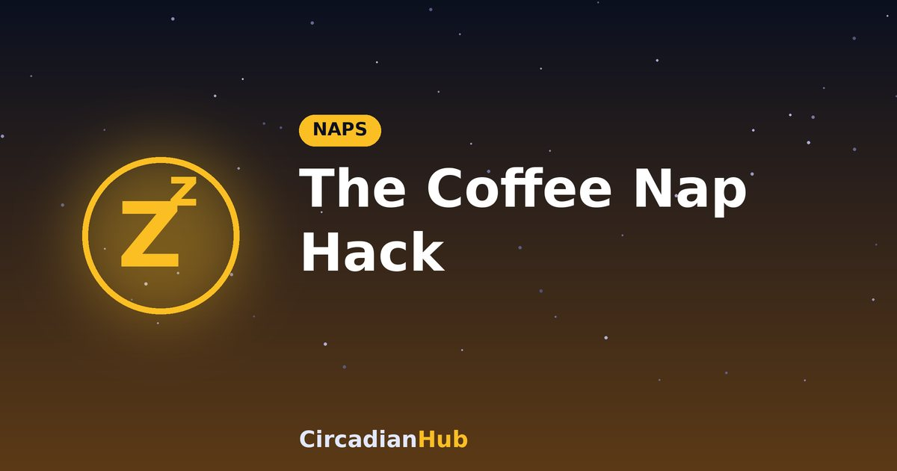
NapsThe Coffee Nap Hack: Why Drinking Caffeine Right Before a 20-Minute Nap Actually Works
What a coffee nap is, how caffeine and adenosine interact, and how to time one so you wake up alert.
Read more →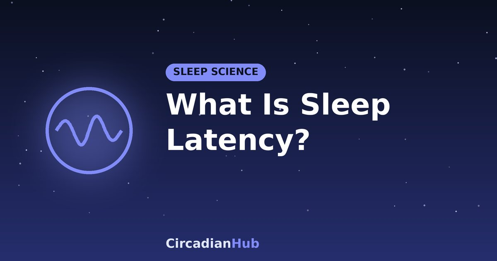
Sleep ScienceWhat Is Sleep Latency? Why Taking Too Long (or Too Quick) to Fall Asleep Explains Your Fatigue
What sleep latency is, what counts as normal, and why falling asleep too fast or too slowly can signal a problem.
Read more →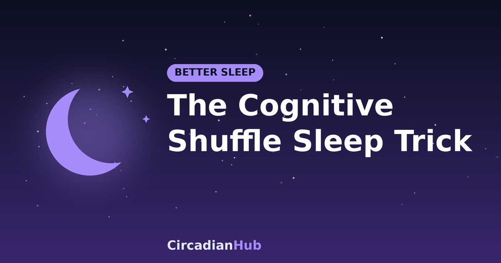
Better SleepThe Military Sleep Trick: How the Cognitive Shuffle Method Forces a Racing Mind to Sleep in Minutes
How the cognitive shuffle works, how to do it step by step, and why it can quiet a racing mind at bedtime.
Read more →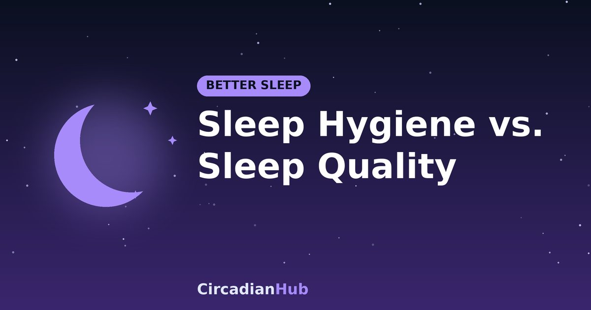
Better SleepSleep Hygiene vs. Sleep Quality: The Hidden Environmental Factors Hurting Your Recovery
The difference between sleep hygiene habits and sleep quality, plus the hidden bedroom factors that reduce recovery.
Read more →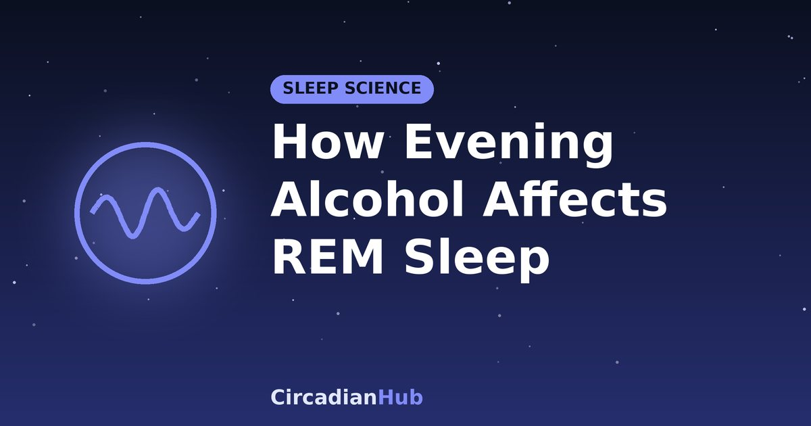
Sleep ScienceThe Impact of Evening Alcohol on REM Sleep Architecture: Why a Nightcap Makes You Wake Up Tired
How evening alcohol suppresses REM sleep, fragments the second half of the night and leaves you tired.
Read more →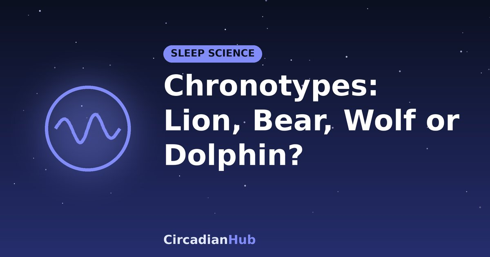
Sleep ScienceChronotypes Explained: How to Identify if You Are a Lion, Bear, Wolf, or Dolphin Sleeper
What chronotypes are, how the four animal types popularised by Dr Michael Breus work, and how to find yours.
Read more →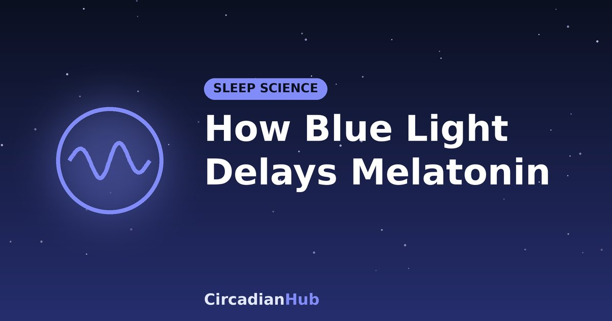
Sleep ScienceHow Blue Light from Smartphones Chemically Delays Natural Melatonin Production
How evening blue light from screens suppresses melatonin, what the research shows, and how to reduce the effect.
Read more →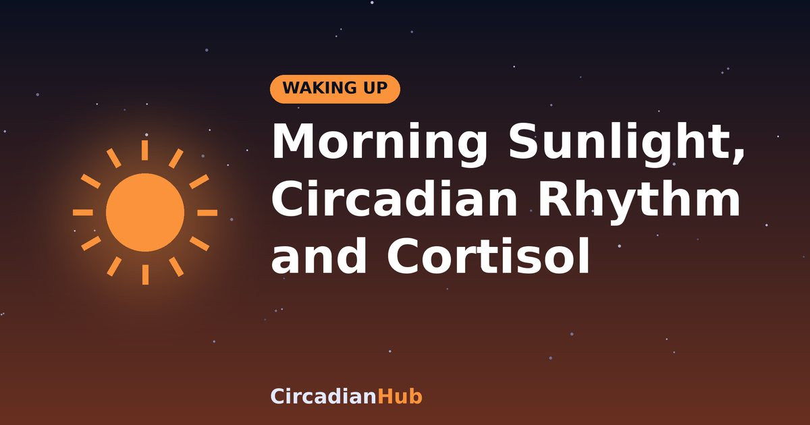
Waking UpWhy Waking Up to Natural Sunlight Resets Your Circadian Rhythm and Lowers Morning Cortisol
How morning sunlight anchors your body clock, shapes the morning cortisol rise and helps you wake up.
Read more →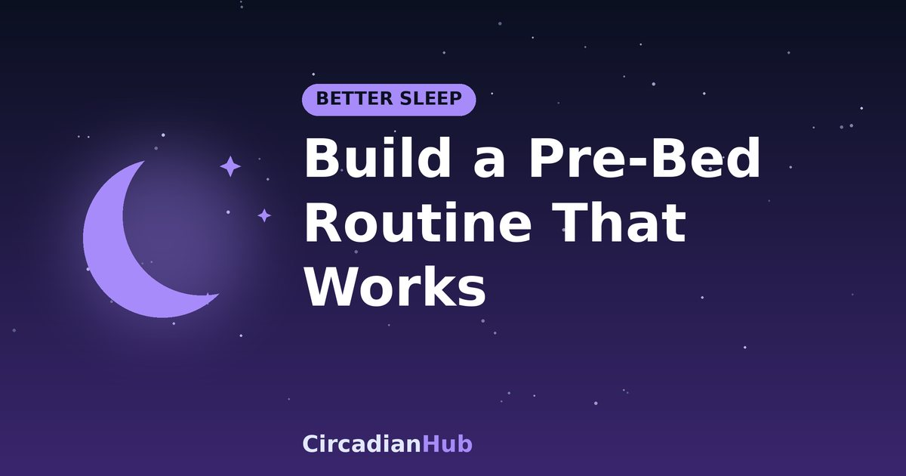
Better SleepHow to Build a High-Performance Pre-Bed Routine That Triggers Automatic Sleepiness
How to design a pre-bed routine that conditions your brain to feel sleepy, with a simple timeline you can adapt.
Read more →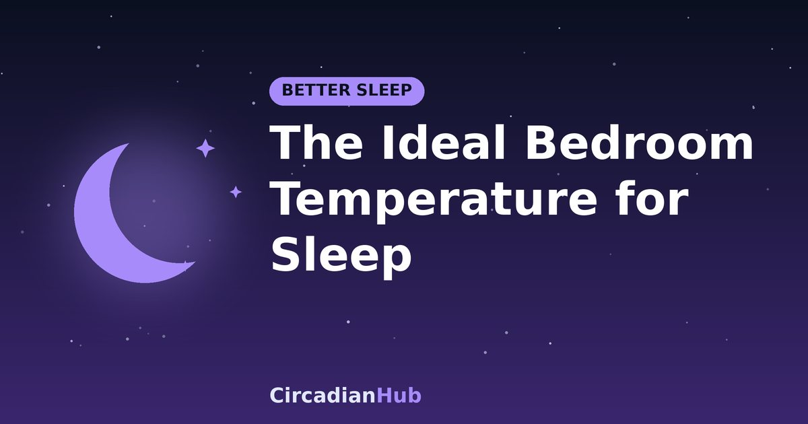
Better SleepThe Ideal Bedroom Temperature for Deep Slow-Wave Sleep, According to Clinical Data
What the research says about bedroom temperature and deep sleep, the commonly recommended range, and how to adjust it.
Read more → Shift Work
Shift WorkHow to Sleep During the Day: The Complete Guide to a Dark, Quiet Bedroom
Light, noise, temperature and routine tips for sleeping after night shifts.
Read more → Shift Work
Shift WorkManaging Rotating Shift Work: How to Adjust Your Body Clock Between Shifts
Forward vs backward rotation, anchor sleep, light and recovery after nights.
Read more → Shift Work
Shift WorkWhat Is Shift Work Sleep Disorder? Symptoms, Risks and Solutions
How it is recognised, why it matters and what helps.
Read more →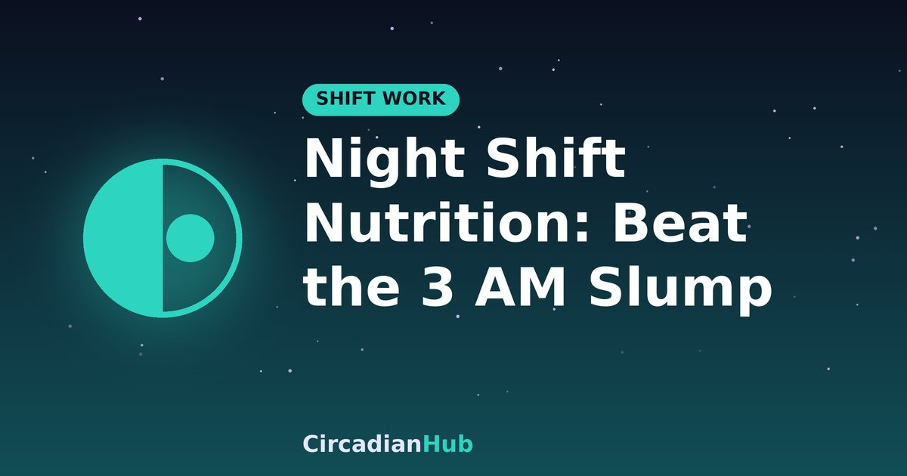
Shift WorkThe Night Shift Nutrition Guide: What to Eat to Avoid the 3 AM Slump
Meal timing, light snacks, caffeine and a sample 12-hour eating plan.
Read more →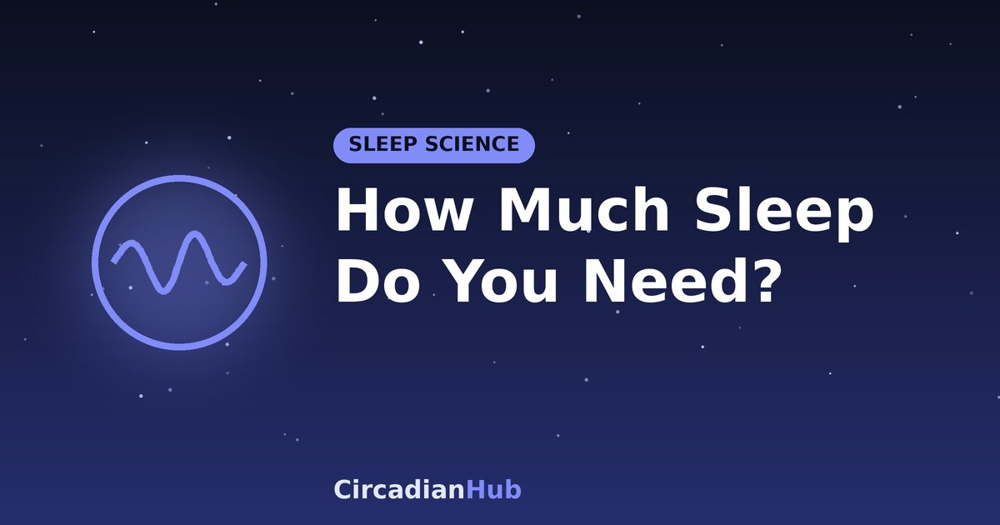
Sleep ScienceHow Much Sleep Do You Need? Recommendations by Age
Recommended hours from babies to older adults, and how to turn them into a bedtime.
Read more →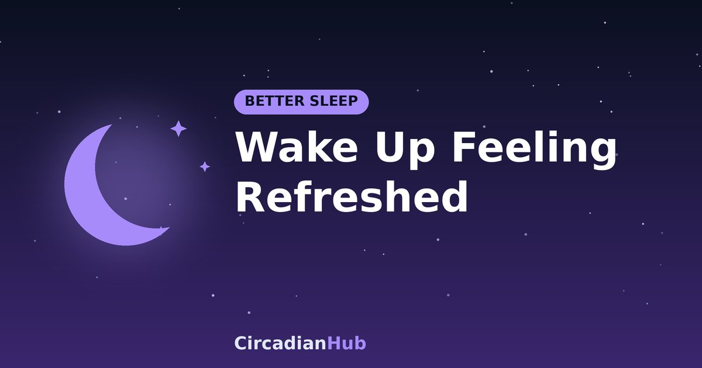
Better SleepHow to Wake Up Feeling Refreshed: Beating Sleep Inertia
What causes morning grogginess and seven habits that help.
Read more → Jet LagJet Lag Westbound: How to Adjust When Flying West
Why west is easier, with a London to New York schedule.
Read more →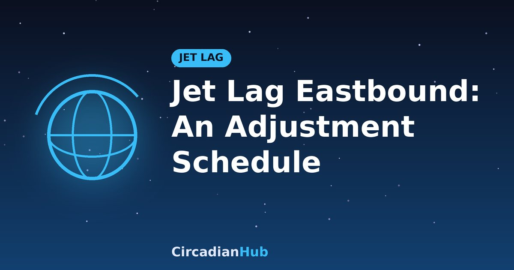
Jet LagJet Lag Eastbound: A Practical Adjustment Schedule
Why flying east is harder, and a day-by-day plan for light, sleep, meals and caffeine.
Read more →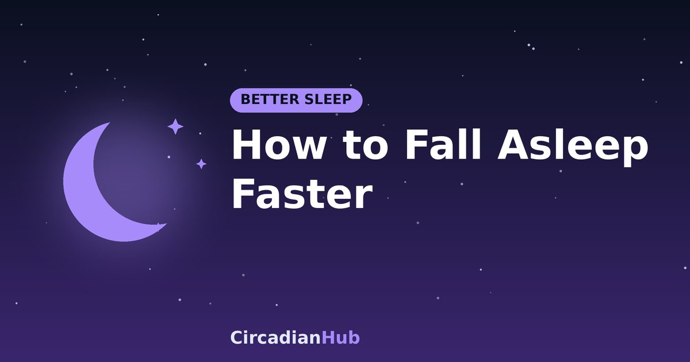
Better SleepHow to Fall Asleep Faster: 10 Evidence-Based Habits
Ten practical habits that shorten the time it takes to drop off, and when to see a doctor.
Read more → Naps
NapsBest Nap Length: 10, 20, 30 or 90 Minutes?
What each nap length does, the best time of day to nap, and how to avoid waking up groggy.
Read more →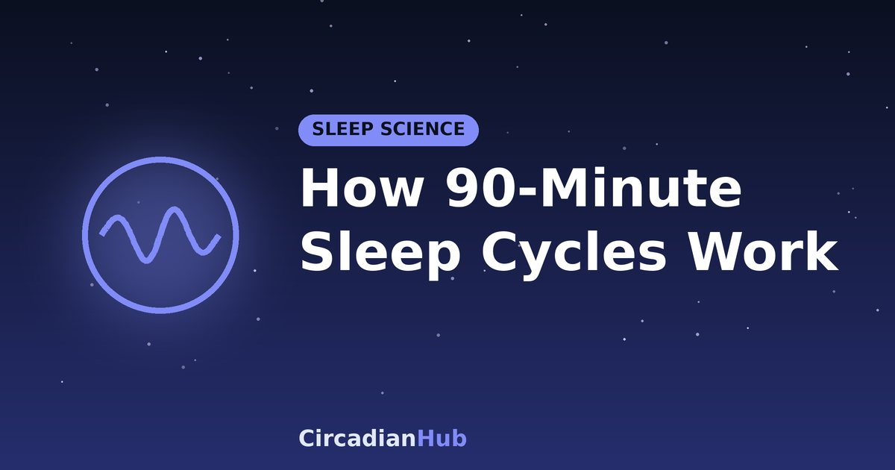
Sleep ScienceHow 90-Minute Sleep Cycles Work (and How to Use Them)
The stages inside each cycle, why waking mid-cycle feels worse, and how to pick bedtimes on whole cycles.
Read more →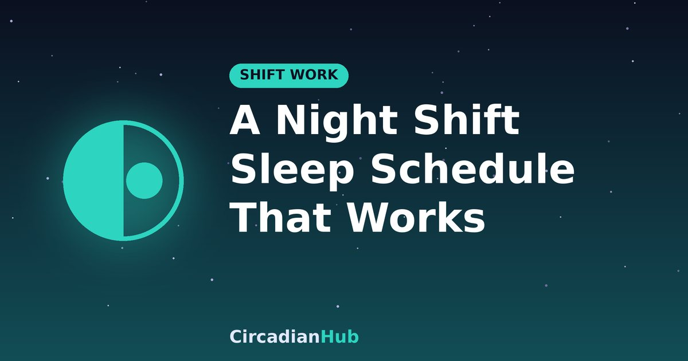
Shift WorkThe Night Shift Sleep Schedule: A Worked 12-Hour Example
Exact wake, sleep and nap times for a 7 pm to 7 am shift, plus light, caffeine and safety rules that make them stick.
Read more →